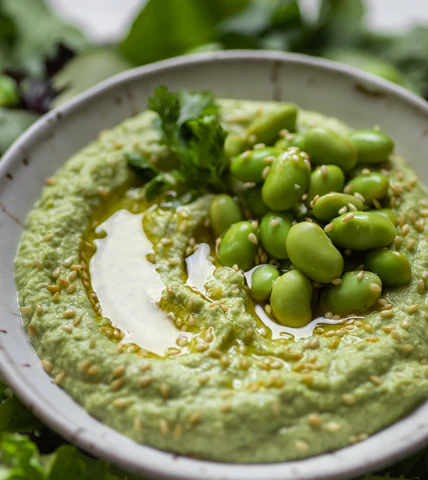

HOME

Hummus de Edamame
Desde hace años el hummus está presente en casi todos los aperitivos que hacemos en casa. Para no aburrirnos, suelo ir variando la receta y preparo diferentes combinaciones.
En el libro no podía faltar este entrante tan recurrente. Así que experimenté con un ingrediente que está muy de moda, el Edamame, y el resultado fue buenísimo
Ingredientes
- 200g de habas de edamame (500g en vainas)
- 150g de garbanzos cocidos
- 1 cucharada de tahini
- 1 diente de ajo pequeño
- Zumo de medio Limón
- Una cucharadita de comino
- Sal
- Pimienta
- Aceite de oliva
Preparación
- Cocemos las vainas con sal durante 4 - 3 minutos
- En una procesadora, trituramos los grabanzos cocidos con el edamame, el tahini, el diente de ajo, el zumo de medio limón, el comino en polvo, sal, pimienta, un chorro de aceite y un poquito de agua.
- Se puede agregar más agua para dar cremosidad siqueda muy espesa.
- Probamos, rectificamos y servimos con unos edamame aceite y un poco de culantro fresco picado encima